Colored Dots
Colored Dots: Creating Apps with Multiple Screens
App Inventor Classic • App Inventor Classic • FOR APP INVENTOR 2 CLICK HERE• App Inventor Classic • App Inventor Classic
This information pertains to App Inventor 1 (Classic). For tutorials about App Inventor 2, go to the App Inventor 2 Tutorials.
This tutorial shows how to create apps that have multiple screens. In App Inventor, you can have a screen open a second screen. Later, the second screen can return to the screen that opened it. You can have as many screens as you like, but each screen closes by returning to the screen that opened it. The screens can share information by passing and returning values when they open and close. The screens also share the same TinyDB data, which they can use to store and share values.
Building an app with multiple screens is a lot like creating several individual apps. Every screen that you create has its own components in the Designer window. In the Blocks Editor, you will be able to see only the components of the screen currently selected in the Designer. Similarly, the blocks of code related to a screen cannot refer to blocks of code in another screen.
This program, ColoredDots, has two screens. ColoredDots is similar to PaintPot, but it uses a second screen to let the user create new colors by providing numerical values for the red, green, and blue color composition (RGB). In the PaintPot app, a user can only paint with one of the three predefined colors. Adding more colors to Paintpot would have required new buttons on the screen, reducing the amount of space available for painting. In ColoredDots, the new color is chosen on a second screen called Brush_Picker. Once a new color has been created in this second screen, its value is passed back to the first screen. You can also save and name the colors you create in the second screen, then use the saved colors later when painting. By using ListPicker to store the colors you create, it eliminates the need for the user to remember the name of the color they saved and spell it correctly in accessing it again. This makes the database of stored colors more accessible, making it easier to share the app among a group of people.
Here are the two screens for the ColoredDots app:
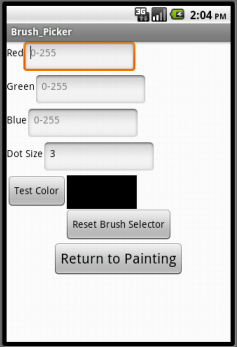
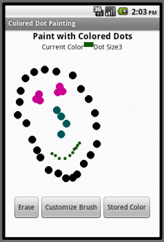
Objectives
By the end of this tutorial, you should have a understanding of:
- How to make an app with multiple screens.
- How to pass values from one screen to another via TinyDB.
- How to fill and use the ListPicker element.
Building the Main Screen (Screen1)
You start building a multiscreen app by creating a new project, just as with any other app. As usual, App Inventor automatically creates the main screen and names it Screen1 and you can add components. Here's the Designer and the Components panel when all the components for Screen1 have been added.
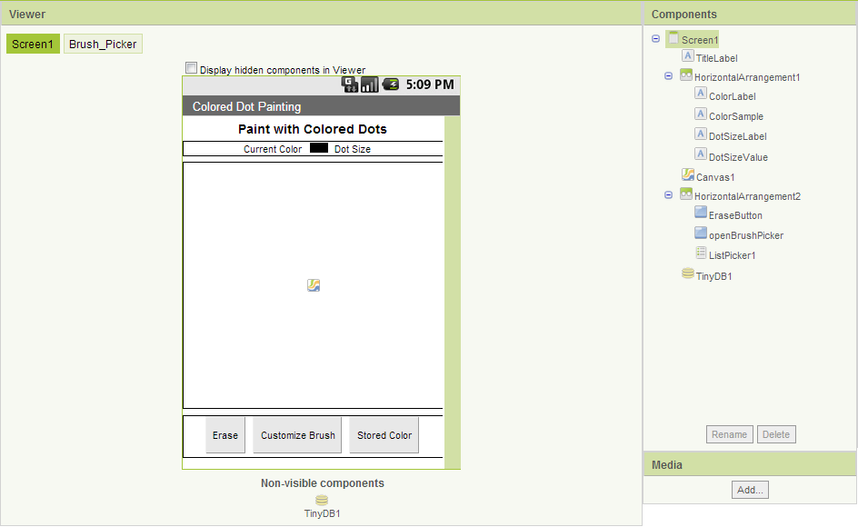
The components are:
| Component Type | Palette Group | What you'll name it | Purpose of Component | Component Settings |
| Label | Basic | TitleLabel | Shows the title "Paint with Colored Dots" | |
| Label | Basic | ColorLabel | Shows the text "Current Color" | |
| Label | Basic | ColorSample | Blank label whose background color is the current color | |
| Label | Basic | DotSizeLabel | Shows the text "Dot size" | |
| Label | Basic | DotSizeValue | Shows the current dot size | |
| Canvas | Basic | Canvas1 | Shows dots at the places you touch | |
| Button | Basic | EraseButton | Clears the canvas | Set text to "Erase" |
| Button | Basic | openBrushPicker | Launches the second screen | Shows the text "Customize Brush" |
| ListPicker | Basic | ListPicker1 | Loads the list of colors from the data base | Shows the text "Stored Color" |
| TinyDB | Basic | TinyDB1 | Stores color names and values |
We'll look at the blocks for Screen1 below. But first let's add the other screen.
Adding a second screen
To add a new screen to your app, click the Add Screen button in the top toolbar of the Designer window. A dialog window will appear, in which you can provide a name for the new screen.
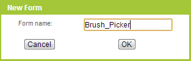

Note: You should make the name of the new screen something meaningful when you add it. Do that now, because once a screen has been added, its name cannot be changed -- the Rename button for the screen component itself is disabled -- it's good to have meaningful names for the parts of your program. One limitation here is that Screen1 cannot be renamed. Remember also that the screen's title (shown in the title bar when the app is running) is different from its name. You can change the screen title in the Properties pane.
When you create a new screen, the Designer window switches to display it. Initially there will be no components, just like with a new app, and you add new components by dragging them from the Palette, just as with any screen. Here's the Designer window for the second screen, named Brush_Picker, after the components have been added. Notice that Brush_Picker is a dark green color, meaning Brush_Picker is the current screen.
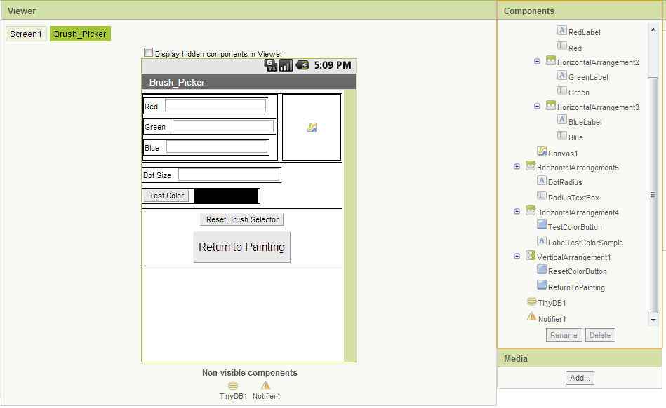
The components for the brush picker screen are:
| Component Type | Palette Group | What you'll name it | Purpose of Component |
| Label | Basic | RedLabel | Shows the text "Red" |
| TextBox | Basic | Red | For entering the amount of red in the color (0-255) |
| Label | Basic | GreenLabel | Shows the text "Green" |
| TextBox | Basic | Green | For entering the amount of green in the color (0-255) |
| Label | Basic | BlueLabel | Shows the text "Blue" |
| TextBox | Basic | Blue | For entering the amount of blue in the color (0-255) |
| Label | Basic | DotRadius | Shows the text "Dot size" |
| TextBox | Basic | RadiusTextBox | Shows the current dot size |
| Button | Basic | TestColorButton | Press to create the new color and prompts the user to store this color |
| Label | Basic | LabelTestColorSample | Blank label whose background color is the new color |
| Canvas | Basic | Canvas1 | Displays the size and color of the test color |
| Button | Basic | ResetColorButton | Resets all the values to the default color, black |
| Button | Basic | ReturnToPainting | Returns to the main screen with the new color and dot size |
| Notifier | Other stuff | Notifier1 | Shows a dialog for saving the color and entering a color name |
| TinyDB | Basic | TinyDB1 | Stores color names and values |
Here and in general with multiple screen apps, only the components that belong to the current screen (in this case Brush_Picker) are shown in the Designer and the Components pane. You can switch between screens by pressing the Brush_Picker and the Screen1 buttons, and the view in the Designer will show the corresponding screen. The same is true for the Blocks Editor: When you're working on a screen you'll see only the blocks for that screen.
None of the components, variable definitions, and procedures that you define in one screen will be accessible from any other screen. We'll see below how to pass information between screens.
Warning: When you switch between screens, you are effectively telling the Blocks Editor to load a new project, and this takes a little time. Wait until the Blocks Editor is done loading the blocks for the new screen before changing things. Most especially, wait until the new screen has finished loading before clicking on blocks or links with the mouse. If you don't wait, you may get errors, or even lose blocks from your project.
Blocks for the main screen (Screen1)
The Screen1 is essentially a drawing program. When you touch the Canvas, the app draws a dot of the current radius and color. The color is specified by the background of the ColorSample label. The erase button clears the canvas. When the screen opens, it initializes the radius to 3 and the color to black. Here are the corresponding blocks:

It is worth noting that the Initialize block uses the procedure TinyDB1.StoreValue and sets the ListPicker to populateList using the set ListPicker1.Elements to block. Each of these actions will be discussed in more detail later. Basically, when the screen starts, it stores the default color, Black, and adds that to the list of colors that can be selected using the ListPicker.
Testing the behavior.Test to make sure the drawing behavior acts as you expect it to. You won't be able to add new colors yet, but see what happens when you try to draw dots of the page.
Communicating with the brush picker screen
The multiple screen aspect of the app involves getting the "new brush": the new color and the new dot radius. It's the job of Brush_Picker to create these values and return these to Screen1 as a list of three items: the color, the dotsize, and the total number of colors stored. The number of colors is necessary for creating the list that ListPicker will reference. We'll see how Brush_Picker does this below, but from the perspective of Screen1, all it needs to do is open Brush_Picker and get the result.
Here's how this happens: when the Customize Brush button is pressed, Screen1 uses open another screen with start value to open Brush_Picker. When the user finishes with Brush_Picker, it will signal the other screen closed event, which provides the name of the screen (here Brush_Picker) and the value returned (here the three-element list). The event handler for Screen1 extracts the three items from the list and sets the ColorSample background and the DotSizeValue text properties. It also calls the procedure populateList, which is defined below. Here are the blocks:

ColoredDots uses open another screen with value to open Brush_Picker with values passed to it from Screen1. The other screen then accesses these opening values using get start value blocks. In general, a screen opens another screen with open another screen and gets a result back though the when other screen closed event. In this case, the values are passed from Screen1 to Brush_Picker so the app can keep track of how many colors are stored and what the current values are.
Testing the behavior. If you want to make sure that your blocks for opening a new screen are working, you will have to package the app to your phone or emulator. App Inventor does not currently allow live development for multi-screen apps, so make sure you package the phone before trying to test the behavior.
Sharing data via TinyDB
Besides opening screens and returning values, the different screens in a multiple screen app can communicate through TinyDB. To do this, give every screen its individual TinyDB component. Even though these will be "different" TinyDB components, they will in fact all share the same keys and values: If one screen stores a value under a key, the other screen can get that value by using the same key.
ColoredDots uses TinyDB to let you name the colors you create and save them to later use. The saving and naming will be done in Brush_Picker, as shown in the blocks later. When you open ListPicker (labelled Stored Color) in Screen1, the app uses opens the list of colors that you have stored for you to choose one and then sets the drawing color to the result. The elements are added to this list by creating the procedure populateList. As shown in these blocks, populateList iterates through the all of the stored entries in the database up to the number of stored colors and adds them to the list tinyDBlist. It returns this list, which ListPicker1 points to.
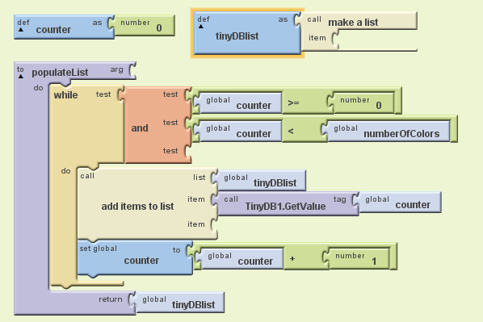
When ListPicker is opened, you will see a list of all the colors you created. ListPicker1.AfterPicking sets the Color value stored for that name to be the current drawing color, as shown here.
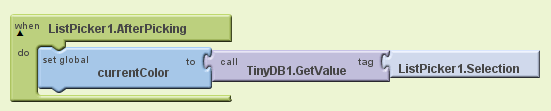
Blocks for the Brush_Picker screen
The main job of Brush_Picker is to create a color from the red-green-blue values entered in the text boxes and provide that color to Screen1. When you click ReturnToPainting the new color, the new dot size (taken from the RadiusTextBox), and the total number of colors are returned to Screen1 as a three-item list.As mentioned above, when Brush_Picker is open, Screen1 passes it values of the current color, the number of colors, and the current dot radius size. Brush_Picker uses get start value when it is initialized to access these values.
When you click the TestColorButton, the color is created for you as the background of LabelTestColorSample and the Canvas shows a circle of the appropriate size and color. To return the list to Screen1, Brush_Picker uses close screen with value, which takes as an argument the value to be returned (in this case, the list). When a screen closes, the app returns to the screen that opened it.
Here are the blocks that do this. Brush_Picker uses the procedures CheckColor and LimitRange to ensure that the values entered in the text boxes are valid numbers for colors and dot size. We'll examine these procedure below."
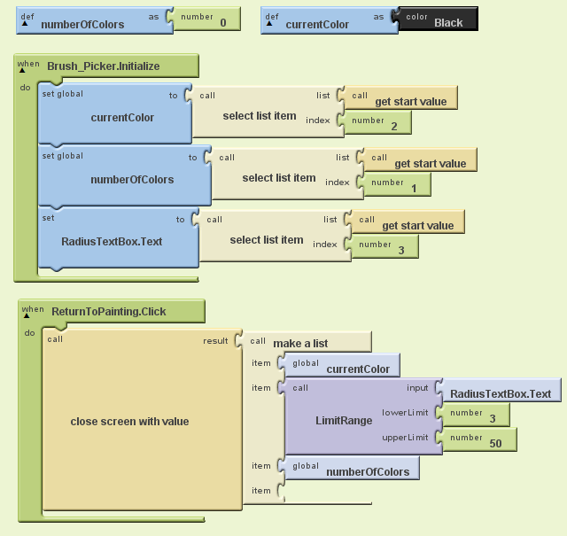
When TestColorButton is clicked, is displays the created color. Notifier1 is then used to give you a choice to save the color or cancel using the Notifier1.ShowChooseDialog block. The response from this will trigger further Notifier events so that you can save the color.
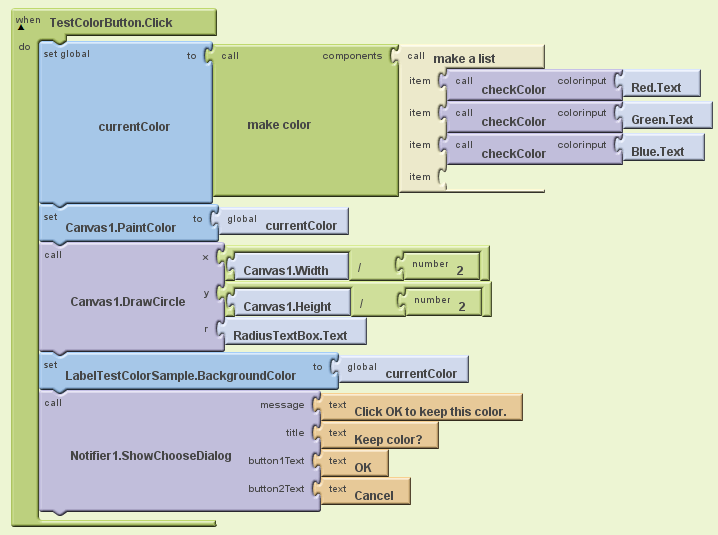
The next blocks show how Brush_Picker associates a name with a color for use by Screen1. The Notifier1.ShowChooseDialog block triggers a Notifier1.AfterChoosing event. In these blocks, the ifelse block checks the response to whether or not the color should be saved. If the response is "OK," Notifier1.AfterChoosing calls Notifier1.ShowTextDialog which prompts you to store a name for this color.
Once you make your entry, the color is stored with two tags two ways in TinyDB1. First, it stores the name with the current number of colors as the key. This is used when iterating through the list of colors for ListPicker in Screen1 so that the names will be displayed for the user. Secondly, the color is stored in TinyDB, using the name you entered as a key. Screen1 can then retrieve the color using its own TinyDB component and access it via the stored name as chosen in ListPicker.
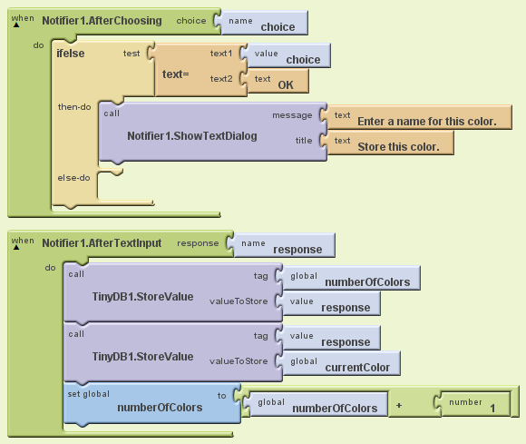
The Reset button allows the user to clear all of the entries in the red, green, and blue fields so they can start over easily. The blocks for this are shown here:
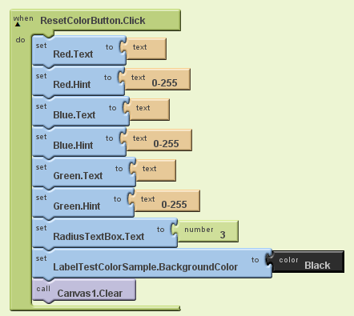
Limiting numbers to a range
The only thing left is to show how Brush_Picker checks that it's using good values for colors and dot size. Each of the red, green, blue values should be a number between 0 and 255. But you could have entered anything in those text boxes. The checkColor procedure takes a value and limits its range to between 0 and 255: If it's less than 0 (or not a number at all) the result will be 0. It it's greater than 255, the result will be 255:

The final bit is LimitRange. This is a general procedure that takes an input, a lower limit, and an upper limit, and restricts the input to lie within that range (and it returns the lower limit if the input is not a number). The procedure is simple, but tricky: To restrict the range, take the maximum of the input and the lower limit, then take the minimum of the result and the upper limit. This programming "trick" has little to do with multiple screens or App Inventor. You might want to take a few moments to convince yourself that it really works.

Comments on multiple screens
You can have many screens in an App Inventor app, but a screen always returns to the screen that opened it. On the other hand, you can get the effect of screens switching to arbitrary other screen by setting up a "manager screen" that is used for opening all the other screens. When a screen wants to switch, it returns to the manager with a value saying which screen to open next.
Testing the behavior. In the current version of App Inventor, it is not yet possible to test a multiple-screen app in live development mode. You can test each screen separately, but you cannot test the communication between two screens. When try to switch between screens, you'll get an error message. To test whether the screens are properly communicating, you'll need to Package for Phone and open the installed app.
Further exploration
Now that you are able to create your own colors and access them for drawing, try some variations!
- Make Brush_Picker warn the user if they are trying to store a color with the same name as something that has already been stored (e.g. don't let them make two colors named "red").
- Have the starting color be the last one that the user was using in the app instead of always starting with black.
Summary
In this tutorial you have learned:
- How to make an app with multiple screens
- How to share data between those two screens using TinyBD
- How to use a counter to add all of the values in TinyDB to add to a list.
- How to use ListPicker to select from a list of items
This tutorial is based on work by Eni Mustafaraj of Wellesley College. Done with Colored Dots? Return to the other tutorials here.
Tutorial Version:
Tutorial Difficulty:
- Advanced
Tutorial Type:
- Multiple Screens
- Drawing Canvas